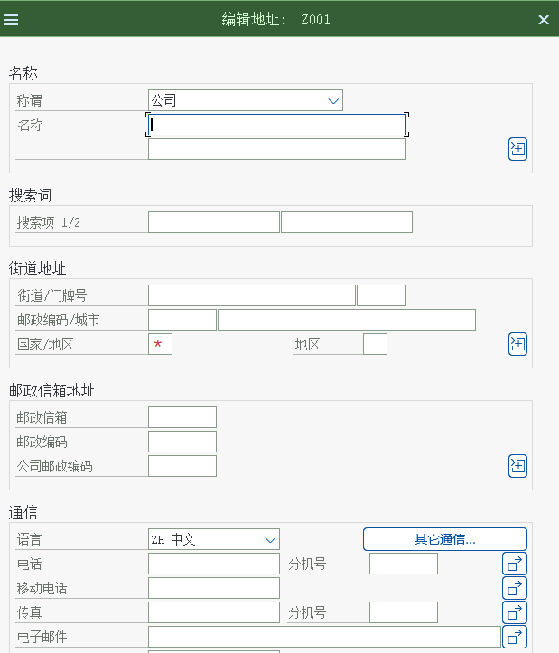

组织结构：先给数据定坐标
企业结构 · 销售结构 · 装运结构 · 分配关系 · 真实系统画面
1. 为什么要先讲组织
因为后面所有东西都挂在组织上：客户主数据要填销售范围，物料销售视图要填销售范围，条件记录要填销售组织/分销渠道，订单抬头要带销售范围，发货要选工厂与起运点。组织结构错一层，后面的数据全都要重做。
教学顺序建议这一页对应教材 SPRO 的最前面一段（企业结构 / 后勤执行）。推荐上课顺序：先在白板上画三个矩形（销售组织 / 分销渠道 / 产品组）并连线成销售范围，再回系统里照着配——理解分配关系之后，配起来很快。
2. 总图

A. 企业结构（Enterprise Structure）
| 对象 | 含义 | 在 SD 里的作用 | 教材场景 |
|---|---|---|---|
| 公司代码 / 公司 | 对外出具财务报表的会计单位 | 决定销售业务落在哪套账上（收入、应收都在这个公司代码里） | 一对多：一个公司代码可以有多个销售组织 |
| 销售组织 Sales Organization | 负责销售的法律单位：产品责任、销售统计 | 销售数据的最高组织键；客户/物料销售视图按它落地 | 教材：颐宁销售组织 |
| 工厂 Plant | 生产与库存的单位（发货从这里发生） | 订单行的工厂决定从哪发货、库存从哪来 | 教材：颐宁机械工厂，分配给直销与批发两个分销渠道 |
IMG 路径（定义销售组织）企业结构 → 定义 → 销售和分销 → 定义、复制、删除、检查销售组织
下面这张是教材里「定义销售组织」的实际画面：先通过后台菜单进入，再双击「定义销售组织」。


B. 销售结构（Sales Structure）
| 对象 | 含义 | 教材里的做法 | 截图的下一步 |
|---|---|---|---|
| 分销渠道 Distribution Channel | 产品通过什么途径到达客户：直销 / 批发 / 零售 | 定义 2 个（直销、批发） | 分配给销售组织 |
| 产品组 Division | 把产品按线分组（整机 / 备件 / 服务） | 定义 2 个 | 分配给销售组织 |
| 销售办公室 Sales Office | 按地区或责任划分的销售机构 | 定义后分配给销售范围 | 用于统计与权限 |
| 销售组 Sales Group | 销售办公室里的人员小组 | 定义后分配给销售办公室 | 进一步细分责任 |
IMG 路径（定义分销渠道）企业结构 → 定义 → 销售和分销 → 定义、复制、删除、检查分销渠道


IMG 路径（维护销售办公室 / 销售组）企业结构 → 定义 → 销售和分销 → 维护销售办公室 ｜ 企业结构 → 定义 → 销售和分销 → 维护销售组
{kind=link}


C. 销售范围（Sales Area）—— SD 的坐标
销售范围 = 销售组织 + 分销渠道 + 产品组。业务含义：某个销售组织「通过某种分销渠道」经营「某个产品组」。它决定客户主数据、物料销售视图（销售范围级数据）、条件记录与销售单据抬头。
教材原话（任务 07 设置销售范围）
「SAP 把销售组织、分销渠道和产品组的组合称为『销售范围』……在颐宁销售组织中，我们可以分配通过直销和批发经营两种产品组的销售，一共有四个销售范围。」
→ 1 × 2 × 2 = 4 个销售范围，必须逐个设置。
IMG 路径（设置销售范围）企业结构 → 分配 → 销售和分销 → 设置销售范围


课程场景（教材环境）里真实存在的值
下面这些值是从教材画面的表格里逐字读出来的（截图说明里标注了「课程场景值」）。上课时可以直接拿它对照学员自己系统里的数据。
| 对象 | 值 | 说明 |
|---|---|---|
| 销售组织 | C999 颐宁销售 | 教材环境的销售组织编码 |
| 分销渠道 | Z1 直销 / Z2 批发 | 两个渠道 |
| 产品组 | Z1 铸钢泵 / Z2 增压泵 | 两个产品组 |
| 销售范围（4 个组合） | C999/Z1/Z1、C999/Z2/Z1、C999/Z1/Z2、C999/Z2/Z2 | 「设置销售范围」画面里的 4 行（画面 7） |
| 工厂 | P999 颐宁机械工厂 | 分配给 C999 的 Z1、Z2 两个渠道 |
| 起运点 | Z999 颐宁装运点 | 分配给工厂 P999 |
| 拣配库存地点 | Z999 + P999 → 库位 003 | 「分配拣配地点」画面里的一行 |
编码为什么是 Z 开头教材环境用了
C999 / Z999 / P999 这类练习用编码，真实客户里常见的是 1000、1010（数字）或客户自建的 Z 编码。不要背编码，要会看「这个编码在组织图里的位置」。常见错误只建了销售组织就直接去建客户主数据 —— 销售视图里选不到销售范围，客户建不下去。销售范围是「设置」出来的，不是自动生成的。
D. 装运结构（Shipping）
| 对象 | 决定什么 | 关系 | 教材实例 |
|---|---|---|---|
| 起运点 Shipping Point | 从哪个地点发货（装运的起点） | 与工厂多对多 | Z999 颐宁装运点 |
| 装载点 Loading Point | 装货的具体位置 | 挂在起运点上 | 定义装载点后按需分配 |
| 拣配库存地点 | 从哪个库存地点拣货 | 由起运点 + 工厂 + 存储条件确定 | 教材只启用前两个条件 |
| 运送条件 Shipping Conditions | 运输方式与时间 | 与物料 / 工厂一起决定起运点 | 客户主数据与物料主数据里都有 |
| 装载组 Loading Group | 决定装载点 | 与物料主数据一起用 | 物料主数据里维护 |
IMG 路径（定义起运点）企业结构 → 定义 → 后勤执行 → 定义、复制、删除、检查起运点
教材里起运点的名称是 Z999 颐宁装运点（画面上可见），它随后要分配给工厂：


IMG 路径（分配拣配库存地点）后勤执行 → 装运 → 拣配 → 确定拣配地点 → 分配拣配地点

E. 分配关系一览（一张表说清多对多）
| 分配 | 关系 | 教材里的做法 | IMG 路径 |
|---|---|---|---|
| 销售组织 → 公司代码 | 多对一 | 把销售组织挂到公司代码上 | 企业结构 → 分配 → 销售和分销 → 给公司代码分配销售组织 |
| 分销渠道 → 销售组织 | 多对多 | 直销与批发都分配给颐宁销售组织 | 企业结构 → 分配 → 销售和分销 → 给销售组织分配分销渠道 |
| 产品组 → 销售组织 | 多对多 | 两个产品组都分配 | 企业结构 → 分配 → 销售和分销 → 给销售组织分配部门 |
| 销售范围 | 由三键组合决定 | 共 4 个组合 | 企业结构 → 分配 → 销售和分销 → 设置销售范围 |
| 销售办公室 → 销售范围 | 多对多 | 按地区挂 | 企业结构 → 分配 → 销售和分销 → 给销售范围分配销售办公室 |
| 销售组 → 销售办公室 | 多对多 | 按小组挂 | 企业结构 → 分配 → 销售和分销 → 给销售办公室分配销售组 |
| 工厂 → 销售组织 / 分销渠道 | 多对多 | 颐宁机械工厂 → 直销 + 批发 | 企业结构 → 分配 → 销售和分销 → 分配销售组织-分销渠道-工厂 |
| 起运点 → 工厂 | 多对多 | 一个工厂可以有几个起运点（公路、水路…），一起运点也可多工厂共用 | 企业结构 → 分配 → 后勤执行 → 给工厂分配起运点 |
| 拣配库存地点 | 由起运点 + 工厂（+存储条件）决定 | 只启用前两个条件 | 后勤执行 → 装运 → 拣配 → 确定拣配地点 → 分配拣配地点 |
记忆法凡是「分配」两个字，基本都是多对多；凡是「范围」「确定」两个字，基本都是由多个键组合后查表得出。教材任务 11 特意提到「简单的排列组合，共 8 种组合」——说的是把 2 个渠道 × 2 个产品组的多重分配想清楚。
F. 真实画面：建组织的 12 个任务（索引）
下面是教材 SD 模块里属于「组织结构」的任务清单（路径与任务号与教材一致，可回原文核对）。完整逐步手顺见 配置页。
| 任务 | 标题 | 教材 IMG 路径 | 画面数 |
|---|---|---|---|
| 任务 01 | 定义销售组织 | 企业结构 → 定义 → 销售和分销 → 定义、复制、删除、检查销售组织 | 6 |
| 任务 02 | 定义分销渠道 | 企业结构 → 定义 → 销售和分销 → 定义、复制、删除、检查分销渠道 | 4 |
| 任务 03 | 定义产品组 | 企业结构 → 定义 → 后勤常规 → 定义、复制、删除、检查产品组 | 4 |
| 任务 04 | 将销售组织分配给公司代码 | 企业结构 → 分配 → 销售和分销 → 给公司代码分配销售组织 | 3 |
| 任务 05 | 将分销渠道分配给销售组织 | 企业结构 → 分配 → 销售和分销 → 给销售组织分配分销渠道 | 6 |
| 任务 06 | 将产品组分配给销售组织 | 企业结构 → 分配 → 销售和分销 → 给销售组织分配部门 | 3 |
| 任务 07 | 设置销售范围 | 企业结构 → 分配 → 销售和分销 → 设置销售范围 | 4 |
| 任务 08 | 定义销售办公室 | 企业结构 → 定义 → 销售和分销 → 维护销售办公室 | 5 |
| 任务 09 | 定义销售组 | 企业结构 → 定义 → 销售和分销 → 维护销售组 | 5 |
| 任务 10 | 给销售范围分配销售办公室 | 企业结构 → 分配 → 销售和分销 → 给销售范围分配销售办公室 | 5 |
| 任务 12 | 将销售组分配给销售办公室 | 企业结构 → 分配 → 销售和分销 → 给销售办公室分配销售组 | 4 |
| 任务 13 | 将工厂分配给销售组织/分销渠道 | 企业结构 → 分配 → 销售和分销 → 分配销售组织-分销渠道-工厂 | 5 |
G. 自检：在自己系统里怎么看
| 要确认的事 | 怎么确认 |
|---|---|
| 有哪些销售组织、分销渠道、产品组 | 后台直接看企业结构；或用表 TVKO（销售组织）、TVTW（分销渠道）、TSPA（产品组） |
| 销售范围建了哪些 | 后台「设置销售范围」列表；或 VA03 任意订单抬头看销售范围字段 |
| 工厂分配给哪些销售组织 | 后台「分配销售组织-分销渠道-工厂」；或订单行看工厂与「装运点」 |
| 起运点 / 拣配库存地点 | 后台「给工厂分配起运点」「分配拣配地点」；或交货单 VL03N 抬头看起运点 |
| 字段含义不确定 | 光标放到字段上按 F1；取值列表按 F4 |